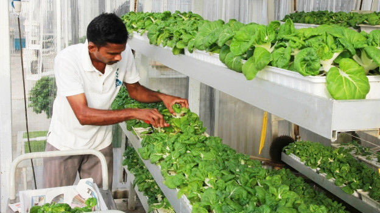

Ciudades más habitables y sostenibles
Desde que inició la Revolución Industrial durante la segunda mitad del siglo XVIII en Gran Bretaña, hemos sido testigos del crecimiento ininterrumpido de las ciudades. A partir de esa fecha, el atractivo de mejores trabajos y la promesa de una mejor calidad de vida, han favorecido el incremento de la cantidad de habitantes en las grandes urbes.
La historia de cada ciudad ha sido única; en sus anécdotas del pasado, problemática del presente y pronósticos del futuro, se han fijado diferentes retos. Vamos a tratar en general del futuro innovador que nos espera en materia de:
- Maximizar el espacio útil.
- Producción y abastecimiento de alimentos.
- Transporte más eficiente y amigable con el medio ambiente.
Nuevas y tecnificadas viviendas
El Instituto Tecnológico de Massachusetts (MIT) tiene un proyecto para aumentar la funcionalidad de un espacio de trabajo o habitacional. Donde los más importante no son los metros cuadrados, sino lo que eres capaz de hacer con el área que tienes.
En un espacio de 20 metros cuadrados, una pared móvil se desplaza guiada por unos rieles en el suelo y divide la habitación en dos ambientes que se amplían o se reducen según las necesidades del habitante.
Gracias a sensores de movimiento, se detectan los gestos que hace la persona con sus brazos y en cuestión de segundos se desplaza la pared o una pieza de ésta para desplegar una cama, la mesa, extender el baño, etc. Inclusive puede activar un modo de fiesta donde luces led de colores dan ambiente a la misma.
La clave de este proyecto es la nueva tecnología llamada "el internet de las cosas" que significa la posibilidad de "implantar" un pequeño dispositivo informático a prácticamente cualquier cosa, de la que queramos obtener su posición, temperatura, etc. y que el ser humano u otros objetos se comuniquen con éste e interactúen.
Hoy en día, "el internet de las cosas" en las casas se resume en iluminación o termostatos. Nosotros queremos que las paredes, camas y mesas también sean capaces de hablar y escuchar y puedan desarrollar nuevas funcionalidades.
Hasier Larrea, MIT
Granjas verticales en la ciudad
Al día de hoy se cultiva prácticamente en la mitad de la superficie terrestre y "fríamente" no hay más espacio en el planeta para la agricultura tradicional. Además, transportar alimentos desde lugares de cultivo cada vez más lejanos incrementa el precio del producto y provoca mayor impacto al medio ambiente; porque como están más retirados se debe gastar más combustible para traerlos en camión, barco o avión.
La mejor alternativa es optar por las granjas verticales localizadas dentro del área metropolitana donde se cultiven alimentos para el consumo en la misma ciudad. Aunque esta tecnología es relativamente nueva, se esperan grandes ahorros en el consumo del agua; porque se estima que requiere sólo el 10% del agua que los métodos tradicionales.

Las lechugas de City Farm crecen en 15 a 20 días, mientras que en el campo suelen tardar hasta 90 días. La clave está en el uso de técnicas hidropónicas y aeropónicas que rocían de sales minerales las raíces de los vegetales.
Movilidad sobre demanda y con datos abiertos
Ya son casos de éxito aquellas ciudades con mejor calidad de vida donde la mayoría de los traslados se hacen en transporte colectivo (metro, BRT, etc.), en medios no motorizados (bicicletas) y a pie.
El paso natural siguiente es recolectar la posición en tiempo real de todos los vehículos, e inclusive de quienes caminan; bajo una estricta política de protección al anonimato de las personas. Esta información al hacerla de acceso público, como datos abiertos, brindará la base para resolver congestionamientos, buscar las mejoras rutas, predecir los horarios de salida y llegada de los transportes masivos. Ésto favorecerá directamente a la eficiencia y productividad de la metrópoli.
El Social Computing Group del MIT trabaja en el proyecto You are here que mapea ciudades del mundo en base a variables como los accidentes en bicicleta, las distancias a una parada de camión o la apertura de los negocios de entretenimiento, las 24 horas del día.